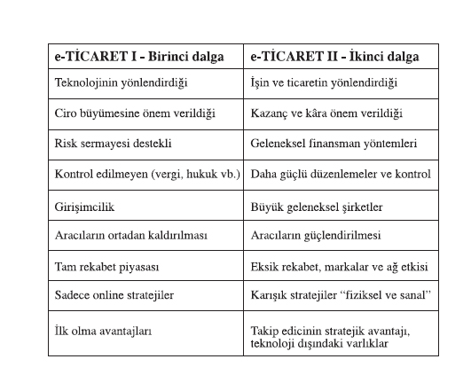
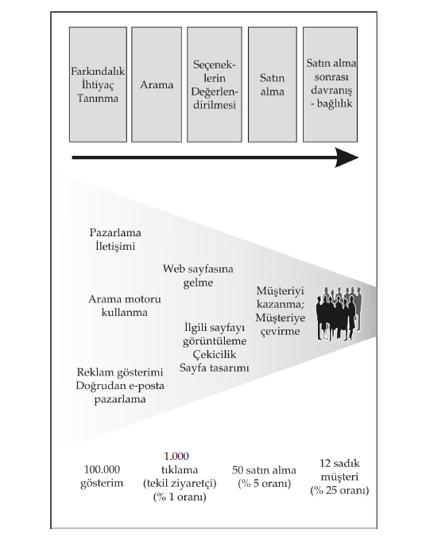

“Kararsızlık; bilgisizlik ve yeteneksizlikten daha fazla başarısızlığa neden olur.”
Flower A. Newhouse
İnternet’in gelişimini üç ana bölüme ayıracak olursak, ilk dönemde 1961- 1974 yıllarında buluş, 1975-1995 arasını kurumsallaşma ve 1995 sonrasını ticarileşme olarak görebiliriz. Aslında tüketicilerin interneti keşfetmesi 1995 sonrasında oluyor. Ticarileşmeyle birlikte elektronik ticaretin de macerası başlıyor. 1995 yılında internet nüfusu 20 milyon civarında iken, bugün bu rakam 1.3 milyara ulaşmış durumda. Yaklaşık 10 yıl içinde bu gelişme ticari olarak tüm şirketlerin de interneti zorunlu olarak kullanmasını doğurdu. Şirketlerin yanı sıra yeni çalışma yöntemleriyle internet, değişime yol açan bir dönüm noktası oldu.
Elektronik ticaret başladığından bu yana, iki ana döneme ayrılıyor. İlk dönem 1995’te başlayıp 2000’li yıllarda sonlanıyor. İnternetin ticarileşmesinin de 1995 yılında başladığını kabul edersek, ilk dönem Amerika’da Nasdaq borsasındaki nokta.com balonunun patlamasıyla birlikte bitiyor. Bu yıla kadar borsaya arz edilen internet şirketlerinin fiyatları olduğundan değerleniyor. Bu duruma teknik dilde “balon” diyorlar. 2001 ile birlikte artık elektronik ticarette yeni bir dönem başlıyor. Bu iki dönemi birbirinden ayıran açık özellikler var. İlk dönem tamamen yeni teknolojilerin yönlendirdiği, internet üzerindeki şirketlerin her şeyden daha çok ciro büyümesine odaklandıkları bir zaman dilimi olarak karşımıza çıkıyor. Aynı dönem içinde elektronik ticaret şirketleri risk sermayesi şirketleri tarafından destekleniyorlar. İlk kuruluşlar risk sermayesi şirketlerinin arka çıkmaları ile oluyor. Vergi, yasa ve diğer kurallar tam oturmadığı için kontrol edilemeyen bir yanı var internetin. Girişimciler yeni fikirleriyle ortaya çıkıyorlar, mevcut şirketler ise internete geçmekte yavaş kalıyorlar. Yeni bir çok internet şirketi tam rekabet piyasasını oluşturuyor. Yeni ekonominin kuralları oluşturuluyor ve bu yeni şirketler sadece online stratejiler üzerine gelişiyorlar. İlk olmanın avantajı konusunda bir çok şey yazılıp çizili-yor ve ilk olan bir kaç internet şirketi bazı avantajları kullanıyor.
E-Ticaret ikinci dönemin, 2001 yılında başladığını kabul edebiliriz. Bu dönem şirketlerin değerlerinin tekrar tanımlanması, modellerinin tekrar değerlendirilmesi olarak anlatılabilir. Bunun yanı sıra fiziksel işleri olan şirketlerin interneti, modellerinin içine alarak geliştirmeleri aynı döneme denk geliyor. Artık kazanç ve kârlılık ön plana çıkıyor. Bunun yanı sıra işin ve ticaretin yönlendirdiği, risk sermaye şirketlerinin yerine geleneksel finansman yöntemlerinin kullanıldığı, daha güçlü düzenlemelerin ve kontrollerin olduğu, büyük geleneksel şirketlerin el attığı, aracıların güçlendiği bir dönem önümüze çıkıyor. Karşımızda tam rekabet piyasası yok; eksik rekabet, güçlü markalar ve ağ ekonomi etkisi var. Sadece online olmak yetmiyor, fiziksel dünyada da yerinizi almanız gerekiyor. Stratejiler “fiziksel ve sanal” (clicks and mortars) olarak kuruluyor. İlk olmak avantaj olarak kabul edilmeyebiliyor. Takip edici olmak, şirketlere internet hızında olsa bile avantaj sağlayabiliyor. Teknolojinin dışındaki varlıklar önemli oluyor. Marka değeri, taşınmazlar, iş süreçleri, insan kaynakları bunlardan bir kaçı...

Tablo - E-ticaret I ve II’nin karşılaştırılması
Başarısızlık sebeplerini aşağıda incelemeye başladığımızda bu konuya daha sonra tekrar döneceğiz. Geçmiş yıllarda yapılan hatalar geleceğe ışık tutuyorlar. Churchill’in söylediği gibi:
“Ne kadar geriye bakabilirseniz, o denli ileriyi görebilirsiniz.”
1995 sonrasında elektronik ticarette tüm dünyada özellikle Amerika’da birden patlama yaşandı. İlk kurulan şirketlerin çoğu pazar payı kapmak uğruna bir çok iş modellerini kâr amacı gözetmeksizin kurdular ve yaşatmaya çalıştılar. Girişimci gençlerin yeni fikirleri hızla hayata geçirmeye çalıştıkları ve 2000 yılında borsadaki çöküşüyle sonlanan bu dönem elektronik ticaret’in ilk yarısını, belki de ilk dalgasını oluşturuyor. İkinci dönem ise 2001 Ocak’tan itibaren başlıyor ve ilk dönemdeki yanlışlıklardan dersler çıkartılarak günümüze kadar devam ediyor.
1995 yılında başlayan bu ilk dalgada bir çok şirket başarısızlığa uğradı. pets.com, webvan.com, etoys.com bunlardan sadece bir kaçı...
Aynı gelişmeler Türkiye’de de yaşandı. ixir.com, weezy.com superonline.com tarafından satın alındı. Sadece Amerika’da 2000 yılında 210’dan fazla, 2001 yılında 555 internet şirketi kepenklerini indirdi.
Girişimciler için gündemdeki soru, birinci dalga elektronik ticarette yaşanan başarısızlıklardan neler öğrenebilir ve ikinci dalgada neler yapmak lazım? Bu başarısızlığın arkasında yatan sebepleri incelemek istersek, ana 5 sebep görmemiz mümkün. 15
1. Pazar payı satın alma, değer yarat.
Bir çok internet şirketi iş modellerinin başarılı olması için pazara ilk giren olmak ve girdikleri sektörde tüm tüketicileri bir anda kendilerine çekmek istediler. Bu amaca ulaşmak için çok yoğun reklam kampanyaları düzenlediler. Çok pahalı televizyon reklamları yaptılar. Yeni müşteri kazanma maliyetlerini oldukça yükselttiler. Bu yatırımcılarda yeni beklentilerin oluşmasına sebep oldu. Yaptıkları büyük harcamalarla kazandıklarını düşündükleri yüksek müşteri veya üye sayıları şirketler üzerinde yüksek ciro beklentileri yarattı. Keza reklamları kullanmanın yanı sıra müşteri kazanmak için fiyatlarını indirdiler, ürünlerinin yanında ek ürünler verdiler. Tüm bu yöntemler kısa sürede zarar yapmalarına sebep olduğu gibi, kısa vadeli müşteri sayısı artışı gelecek dönemlerdeki satış beklentisini de oldukça arttırdı.
Müşteri sayısını arttırma, en fazla üyeye ulaşma fikrinin altında, “en çok müşteriye sahip şirketlerin en kârlı” olduğu düşüncesi yatıyordu. Burada birçok şirketin yanıldığı nokta, sayısal müşteri sayısıyla kârlılığın doğrudan bağlantılı olmadığıdır. Müşteriyle güçlü ilişkileri olan küçük şirketler daha yüksek kâr marjıyla çalışırlar. Bunun yanı sıra ikinci yanılgı “yüksek pazar payının kârlılık” getireceği düşüncesiydi. Bu kural da mutlak olarak geçerli değildir. Kârlılık için büyük pazar payı gerekli olmayabilir. Odaklanmak, pazarın küçük bir kısmına yönelmek daha kârlı bir yöntem olabilir.
webvan.com başarısız örnekler konusunda öncelikle anlatılır. Yapılan hatalar üniversitelerde öğrenciler için vaka çalışmaları için birebir uygulamadır. İnternette iş modelinin yanlış uygulanmasının en açık örneğidir. Ayrıca şirketin kısa hikayesi yatırımcıların, kısa vadede büyüme ve pazar payı yerine birden kârlılık beklemesi sebebiyle kapana kısılmasını da gösterir.
webvan.com, Silikon Vadisi yakınlarında, Foster City Californiya’da kurulmuştur. 30 dakika içinde müşterilerin siteden aldıkları bakkaliye ürünlerini evlerine teslim etmeyi hedeflemiştir. Bir bakıma migros.com.tr sitesinin benzeri bir model de diyebiliriz, fakat fiziksel mağazası yoktur. Sadece internet üzerinden alışveriş yapılıp sipariş vermek mümkündür. Webvan en iyi zamanlarında Amerika’da San Francisco, San Diego, Los Angeles, Chicago, Portland ve Orange County olmak üzere toplam 7 pazara hizmet etmiş ve batmadan önce 26 şehirde büyümeyi planlamıştır.
İş modeli internetin en curcunalı zamanında kurulmuştur. Yatırımcıları en kısa sürede alt yapısını hızla kurmasını ve bir çok şehirde hizmet etmesini istemişlerdir. İnternet üzerinde bir manav veya yiyecek dükkanı fikri başlangıçta çok güzel görülse de işin sahipleri tüm her şeyi kendileri yapmak istemişlerdir. İşbirliklerine girmemişler, tüm işleri kendileri yapmak istemişlerdir. Supermarket zincirleri, tedarikçiler, toptancılar veya daha küçük satıcılarla işbirliği yapmamışlardır. Borsadaki şirket analistleri şirketin en üst yöneticilerinin supermarket sektöründe tecrübelerinin olmamasını hep eleştirmişlerdir.
Tüketiciler tarafından popüler olduğu günlerde alt yapısını kurmak için ciro büyümesinden daha fazla bir oranda yatırımlar yapmıştır. Örneğin toplam 1 milyar dolara mühendislik firması Bechtel’e depolar yaptırmış, kamyon filoları satın almış, binlerce sunucu, bilgisayar sistemi yatırımı yapmıştır. 80’den fazla 21 inch monitor ve 115 adet Herman Miller Aeron sandalyelerden almışlardır. Bu sandalyelerin tanesinin 800 USD olduğunu ve 1990 ların sonunda 21 inch ekranların lüks kabul edildiğini hatırlatmakta fayda var. Kısaca kurucular büyümeyi beklemeden gerektiğinden fazla harcama yapmışlardır. Görüldüğü gibi sıfırdan sermaye kıtlığında kurulmuş bir internet şirketi değildir. Yatırımcılardan 1.2 milyar USD sermaye girişi olur, piyasa değeri en iyi zamanında 7.5 milyar USD’na ulaşır. 1999 yılı 3’ncü çeyreğinde 22.000 olan müşteri sayısını reklam kampanyalarıyla 2000 yılı sonunda 640.000’ye çıkarırlar. 2000 yılı sonunda günlük 9.500 sipariş alırlar. 2000 yılında reklama 200 milyon USD harcarlar ve 9 Temmuz 2001’de kapılarını kapatırlar. Döneminde dergilerde ve gazetelerde yer alması popüler bir model olduğu algısını yaratmıştır ve aynı modeli birçok şirket uygulamaya çalışmıştır.
Webvan’in kapanmasında bir çok faktör sayılabilir. En önemlisi katma değer yaratmak yerine pazar payı satın almaya odaklanmıştır. 640.000 müşteriye ulaştıklarında tekrarlanan alışveriş miktarı oldukça düşüktür. Pazar payı alabilmek için reklamlara olduğundan fazla para harcamışlardır. Bunun yanı sıra yatırımcılarda kârlılık konusunda büyük beklentiler yaratmışlar, alt yapı yatırımına çok para yatırmışlardır. Tüm bunların üst üste gelmesi, bunun yanı sıra internet hisse senetlerinin borsada ani düşüşüne müteakip, şirketin başarısızlık bayrağını çekmesine sebep olmuştur.
Basın toplantılarıyla sunulan internet sitelerini hiç sevmem. Samimi bulmam. Müşteriye yakın olduklarını hissedemem. Asıl olanın sessiz sakin derinden büyüyen ziyaretçilerinin büyüttüğü iş modelleri olduğunu düşünürüm. Sermaye olup yatırım yapıldığı zaman bunun bir başarı öyküsü yarattığını düşünmüyorum. Mutlaka yatırımcılarına kârlılık sağlıyor olabilirler, dergilerde, gazetelerde onlardan bahsediliyor olabilir. Heyecanlı olan küçük ofislerde zor günlerden 10’larca kişinin çalıştığı müşterilerinin memnun oldukları öyküleri çıkarmak diye düşünüyorum. Bazı internet şirketleriyle konuşmak üzere randevulaştığımızda ofislerine çağırmak konusunda tereddüt ederler. İşe başladıkları o küçük ofisler, evler, dükkanlar başarı kokar yoksa büyük otellerde yapılan küçük kanepelerin dağıtıldığı bilgisayar sunumları değil.
2. Müşteri veri tabanını dikkatle değerlendir.
Bir çok şirket müşteri bilgisi elde etmekle müşteri kazanmanın farkını anlayamadılar. Bu konuyu hâlâ idrak edememiş firmalar yok değil. Unutulmaması gereken gerçek şudur ki bir siteye üye olmak, kayıt olmak, müşterinin taahhüdü anlamına gelmez. Yeni bir üye potansiyel bir müşteri olabilir. Trafiği gelir getiren müşterilere çevirmek için basit bir form doldurmaktan daha fazlası yapılmalıdır. Bu üyelere bekledikleri katma değerli hizmetler verilmelidir. Aksi taktirde üye sayısının milyonlara ulaşması hiç bir anlam kazanmayacaktır. Bunun yanı sıra yeni internet şirketlerinin değerlendirmeleri sırasında kullanılan bir müşterinin yaşam boyu değerini hesaplamak aynı sebeplerden ötürü doğru olmadığı görüldü. Bu değeri hesaplamak görüldüğünden daha zordu.
Bir müşteriye ulaşmak için internet üzerinde yapılması gerekenleri kısaca bir gözden geçirelim. Bir müşterinin internet üzerinde satın alma davranışına giden adımlarını başlıca 5 ana kısma ayırabiliriz:
• Farkındalık, ihtiyaç, tanınma
• Arama
• Seçeneklerin değerlendirilmesi
• Satın alma
• Satın alma sonrasındaki davranış, bağlılık
Tüm bu adımları geçen firmalar, kendilerine bağlı müşteriler elde edebilirler. Yukardaki adımlar gerekli ancak bir müşteriyi elde tutmak için yeterli değildir. Bu adımları tek tek geçen potansiyel bir üye müşteri olma yolunda bir adaydır.
Şirketler yeni bir müşteri elde etmek için neler yapmalıdırlar ve bir ziyaretçinin müşteriye çevrilme süreci nedir?
1. Pazarlama iletişimi
2. Arama motoru kullanma
3. Reklam gösterimi, doğrudan e-posta pazarlama
4. Web sayfasına gelme
5. İlgili sayfayı görüntüleme, çekicilik, sayfa tasarımı
6. Müşteriyi kazanma,
7. Gelecekte müşteriyi bağlı müşteriye çevirme

Grafik-4
Tüm bu adımları geçen ziyaretçiler, müşteri; belki sadık müşteri olabilirler, ancak bunun her şirket için belli bir maliyeti vardır. 100.000 reklam gösterimi yapıldığında ortalama 1.000 tıklama veya tekil ziyaretçi sitenizi ziyaret eder, (bu %1’lik bir tıklama oranıdır) bu ziyaretçilerin ortalama olarak %5’i alışveriş yapar, 50 kişi satın alır ve 50 kişinin % 25’i sadık müşteri olabilir ki bu da 12 kişiyi müşteri yaptığınız anlamına gelir. Tüm bu oranlar ortalamalardır. Bir şirketin pazarlama iletişimi veya sunduğu katma değeri bu oranları değiştirebilir, ancak aşamalar aynıdır. Tüm bu istatistiksel veriler ışığında ikinci noktadaki ana fikri unutmamamız gerekiyor.
Üye olan her ziyaretçi sizin müşteriniz olduğu anlamına gelmez, bu daha zor bir süreçtir.
3. İnsanları değiştirmek zordur.
İnternet’in getirdiği yeniliklerden faydalanan şirketler, müşteriler için yeni düşünme yolları önermeye başladılar:
• Toplu satın alma modeli,
• Kişiselleştirilmiş ticaret,
• Ters açık arttırma,
• Dinamik fiyatlama.
Bu yöntemler teorik olarak her ne kadar müşteriye fayda sağlıyor olsalar da eski alışkanlıklarından kopamamış müşterilerin bu modelleri bir anda sindirmeleri oldukça zor oldu. Pazarın öncüleri bu modelleri kullanmaya bir an önce başladılar ancak takip ediciler bu modellere bir anda uyum sağlayamadılar. Alışverişlerinde alışık oldukları eski yöntemleri sürdürmeye devam ettiler. Müşterilerin yanı sıra yöneticiler için getirilen yeni düşünme yöntemleri, yeni modeller, yeni kurallar tüm herkesi zorlamaya başladı. Oysa insanları değiştirmek oldukça zordu. Alışkanlıkların değiştirilmesi oldukça uzun süre alıyordu. Bu gerçeği gözardı eden şirketler bir anda her şeyi altüst edeceklerini düşündüler.
4. Yerleşik çıkarları gözardı etme.
Bir önceki noktayla yakın bağlantılı olan yerleşik çıkarlar gözardı edilen diğer bir değişken olarak başarısızlıkların ardında yatan dördüncü sebep olarak karşımıza çıkıyor. Şimdi bir şirketin gelir modelinde ne tür ilişkiler olduğuna bir bakalım. Bir şirket bir grup ilişkilerle çevrilmiştir:
•Bireysel müşteriler
•Aracılar ve satıcılar
•Ortaklar, işbirliği yapanlar
•Çalışanlar
Bu ilişkiler zincirlerinin bir günde kırılması oldukça zordur. Bu gruplar oldukça uzun süren iş modelleriyle birbirlerine bağlanmışlardır. İş modellerinin yanı sıra bu ilişkiler, arkadaşlıklar ve tanıdık ekonomisini oluşturur ve yapılması çok uzun süre alır. Bir anda kırılması ve çökmesini beklemek yanlışlık olur.
5. Fiziksel gerçekliği küçümseme.
Unutulmaması gereken nokta, e-ticaret sadece internetten sipariş almak demek değildir; doğru ürünü, doğru zamanda, doğru kişiye teslim etme sürecidir. İnternet onun sadece bir parçasıdır. Sözünü yerine getirmek e-ticaret şirketlerinin kârlarını en çok etkileyen faktördür. Yeni kurulan şirketlerin çoğu bu noktayı gözardı ederek başarısızlıklarına kendileri sebep olmuşlardır. İnternet kaldıraç etkisini kullanan fiziksel şirketler her ne kadar bir çok şirketten geç girmiş olsalar da bu pazarda tutunmayı başarmışlardır. Bir çok fiziksel şirket, interneti gerçek hayattaki satışlarını arttırmak için kullanmışlardır.